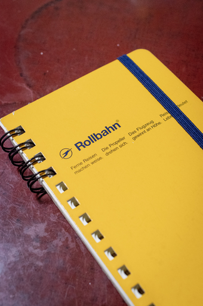
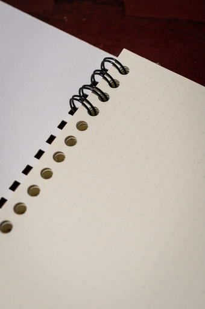
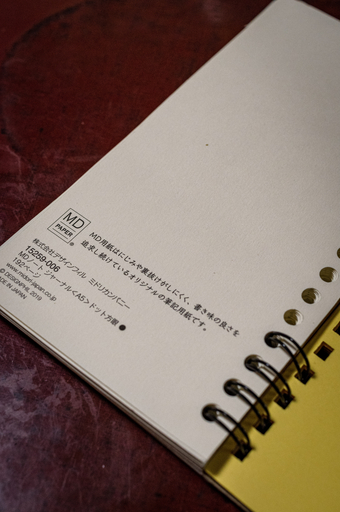
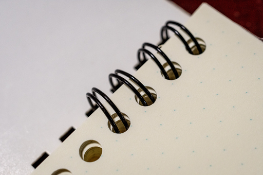
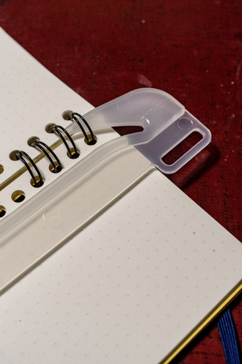
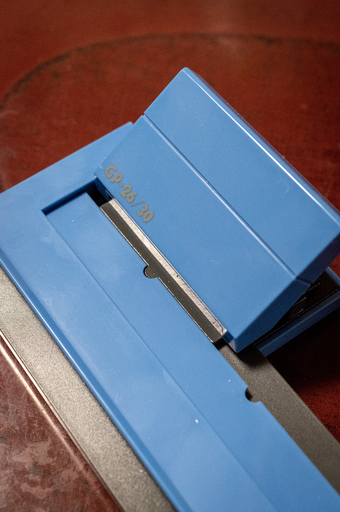
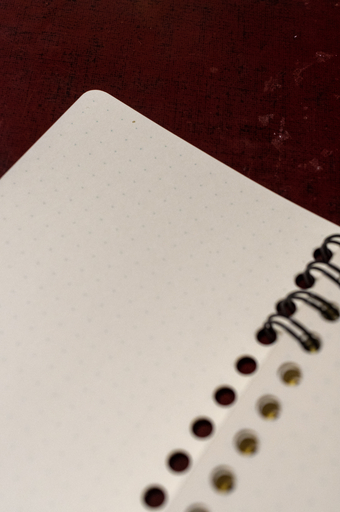
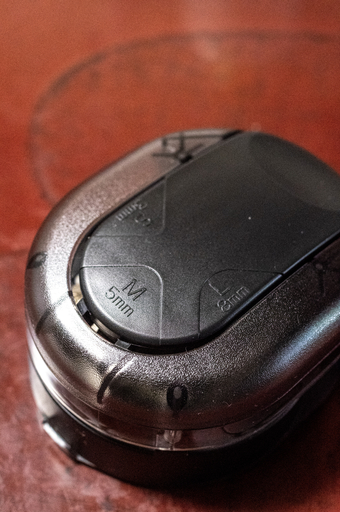

母に譲ったロルバーン・スリムが返ってきた。ここ 1 年ほどはコクヨの測量野帳スケッチをもっぱら使っていたのだけれど、久しぶりにロルバーン・スリムを使いたくなってしまった。

上の画像をみてお気づきになっただろうか。普通のロルバーン・スリムとどこか違う。
リングが短くなっていて上下それぞれ 4 箇所しかリングが通っていない。しかしそれだけではない。下の画像を見て欲しい。

違和感を感じないだろうか？
そう。用紙がロルバーン最大の特徴と言えるミシン目つき 5mm 方眼ではなく、なにやら見慣れないドット方眼だ。また穴の形状もロルバーンの長方形の穴ではなく丸い穴だ。

そう。このメモ用リフィルは筆者がミドリ MD ノートのドット方眼をバラして作ったリフィルなのだ。
紙を入れ替えたとはいえ上の画像の通りロルバーンの特徴の１つであるクリアポケットも健在だ。
なぜこんな手の混んだことをやっているのか。
ロルバーン・スリムを使いたくなって買おうと思ったのはいいが、ロルバーン・スリムは残念ながらディスコンになっていた。なのでもう手に入らない。
メリカリやネットオークションを見ると転売を生業にしている連中がディスコンをいいことにかなりの高額でロルバーン・スリムを転売している。
コレクション目的ならこれら転売品に手を出すという選択肢もあるかもしれないが、筆者は実際に使いたくてロルバーン・スリムを欲している。なので高額転売品に手を出すという選択肢はない。
手元にあるのは亡くなった母親が残したポケットしか残っていないロルバーン・スリム 1 冊だけだ。デルフォニクスからロルバーン・スリムが再リリースされる見込みはあるのかないのか不明だが、まぁなさそうだ。
そうなると亡くなった母親が残したポケットだけになったロルバーン・スリムを使えるようにするしかない、そういう結論に至った。
そのような経緯があってロルバーン・スリムの再生作業を始めた。

ロルバーン・スリム再生にあたり、ついでに上の画像のようにリングを上と下の 4 つだけ通すようにし、その中間はリングがないようにした。リングノートによくあるカスタムだ。このようにするとリングに手が当たりにくくなり右利きの場合は左ページが、左利きの場合は右ページが書きやすくなる。

まずは手持ちのロルバーン・スリムをバラしたいのでリヒトラブのリングノート用リムーバで閉じているリングを開く。そして表紙、裏紙、中身をリングから抜く。
次に綴じ込むメモ用紙を作る。
用紙は自分が好きな紙を使うとよい。自分は中途半端に使って余っていたミドリの MD ノートドット方眼をバラして 164 x 88 mm に断裁しカールの GP-26-B で穴を開けた。
穴を開ける際の道具に何を使うのかは非常に重要だ。道具の選択をミスると穴を開けた紙すべてがゴミになる。
ネットを見るとカール事務器の GP-2429 がロルバーン・ユーザの必需品という書き込みや動画がかなり見られるが、ロルバーンに綴じ込むことを目的にするなら、四角い穴が開くという理由だけで GP-2429 やリヒトラブのパンチは使ってはいけない。
理由は単純でロルバーンの穴あけの規格は JIS 規格で穴同士のピッチが 9.5mm だ。それに対し GP-2429 やリヒトラブのパンチは JIS 規格ではなく ISO 規格を採用しており穴同士のピッチは 1/3 インチ ( 8.47mm ) とロルバーンとは異なる。
ピッチが異なるので GP-2429 やリヒトラブのパンチで穴を開けるとロルバーンに穴の位置が合わず綴ることができなくなってしまう。そのためパンチは JIS 規格の多穴パンチを使う必要がある。

自分は 30 年以上前から使っているカール事務器の GP-26-B で穴を開けた。GP-26-B は当然ディスコン製品だがカール事務器は後継品をちゃんと出しているのでそれを使えば良い。

また中に入れるリフィルはロルバーンの表紙や裏表紙に合うように角を丸めたい。角を丸めればリフィルの角が表紙や裏表紙からはみ出るというみっともないことを防ぐことができる。

角を丸めるときにできれば全リフィルをきれいに揃えて丸めたい。それをサポートしてくれる道具にサンスター文具のかどまるがある。
ロルバーンの角の R は 5mm なので、1 枚ずつ処理するのでも良ければかどまるは一番安いものでも十分使うことができる。
あとは最初に外したリングを 4 つぶんだけニッパーなどで 2 個切り出して、表紙、リフィル、ポケットと厚紙、裏表紙を綴じれば完成だ。
リフィルはロルバーンではないが実用上問題はないし、逆に自分が好きな紙を選ぶことができるので逆に良いかも知れない。
なおまったくの余談だが今回の作業でロルバーン・スリムが実は測量野帳サイズだったことを知った。
測量野帳も良いノートだ。